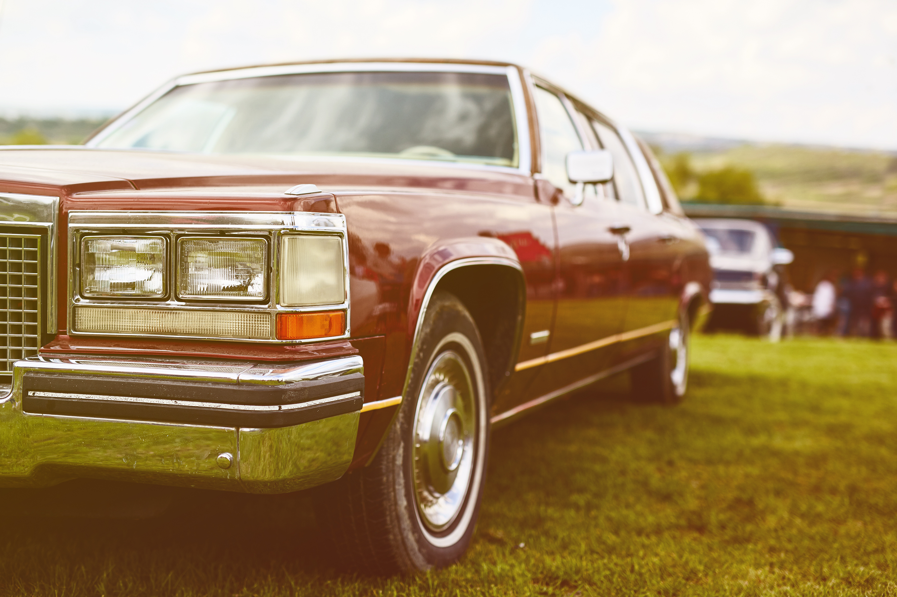

A Look at Car History

Car history and vintage cars are two topics that are closely related. Cars have been around for over a century now, and their evolution has been fascinating. Vintage cars are those that were built in the early days of the automobile industry and are considered to be classic and valuable. In this article, we'll take a look at the history of cars, the evolution of the automobile industry, and some of the most iconic vintage cars.
The history of cars dates back to the late 19th century, when German engineer Karl Benz developed the first gasoline-powered car. His invention was a three-wheeled vehicle called the Benz Patent-Motorwagen. This car had a 0.75-horsepower engine and could reach a top speed of 10 miles per hour. While this may seem slow by today's standards, it was a major breakthrough at the time.
Over the next few decades, the automobile industry grew rapidly. Henry Ford's Model T, which was introduced in 1908, was one of the most significant developments in the history of cars. The Model T was the first car to be produced using an assembly line, which allowed it to be mass-produced and sold at an affordable price. As a result, the Model T became the first car to be widely adopted by the middle class in the United States.
In the following years, cars became more and more advanced. Cars like the Cadillac V-16, which was introduced in 1930, were incredibly luxurious and expensive. This car had a 7.4-liter V-16 engine that produced 165 horsepower, which was an impressive feat at the time. Other cars, like the Volkswagen Beetle, which was introduced in 1938, were more affordable and practical.
The 1950s and 1960s were a golden age for cars. Cars like the Chevrolet Corvette, the Ford Mustang, and the Porsche 911 became iconic symbols of American and European car culture. These cars were sleek, stylish, and fast, and they embodied the spirit of the time.
Vintage cars are those that were built before the 1970s. These cars are considered to be classic and valuable, and they are highly sought after by collectors and enthusiasts. Some of the most iconic vintage cars include the Ford Model T, the Chevrolet Corvette, the Volkswagen Beetle, the Cadillac V-16, and the Porsche 911.
Owning a vintage car can be a rewarding experience, but it also requires a lot of maintenance and care. Vintage cars are often more difficult to repair than modern cars, and finding replacement parts can be a challenge. However, many vintage car enthusiasts enjoy the challenge of restoring and maintaining these classic vehicles.
In recent years, there has been a resurgence of interest in vintage cars. This has led to an increase in the number of vintage car shows and events, where enthusiasts can display their cars and share their knowledge with others. Many car museums also have extensive collections of vintage cars, which allow visitors to learn about the history of cars and see some of the most iconic models up close.
In conclusion, the history of cars is a fascinating subject that spans over a century. From Karl Benz's first gasoline-powered car to the latest electric vehicles, cars have evolved in countless ways. Vintage cars are a testament to the ingenuity and creativity of the early automobile industry, and they continue to captivate car enthusiasts around the world. Whether you're a collector, an enthusiast, or simply a fan of cars, there's something about the history and legacy of these vehicles that continues to inspire and amaze us.